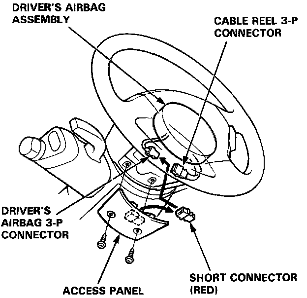
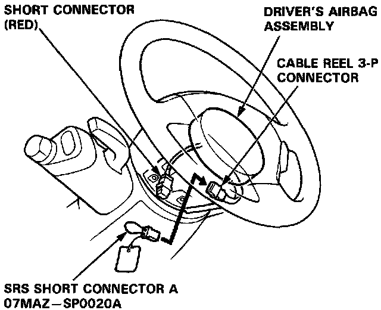
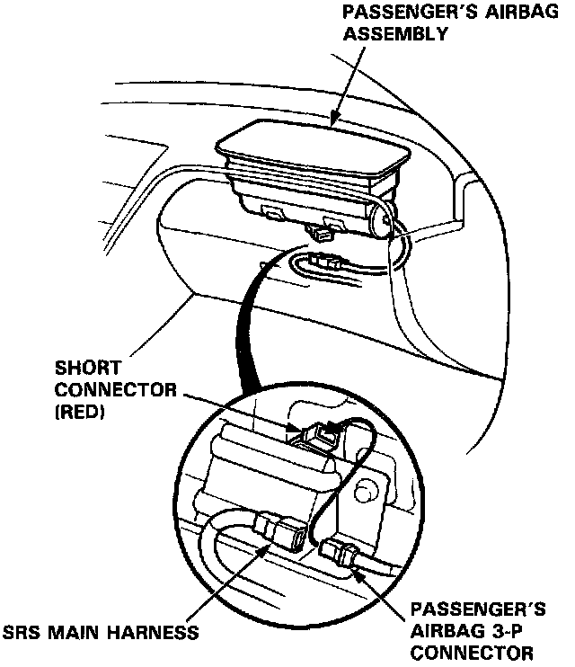
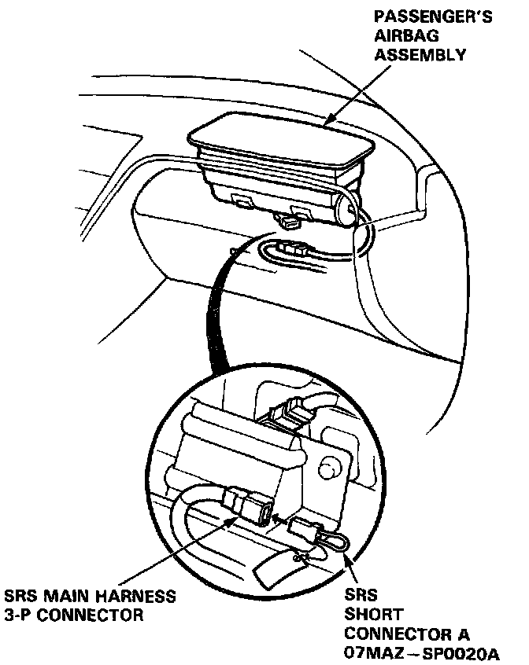
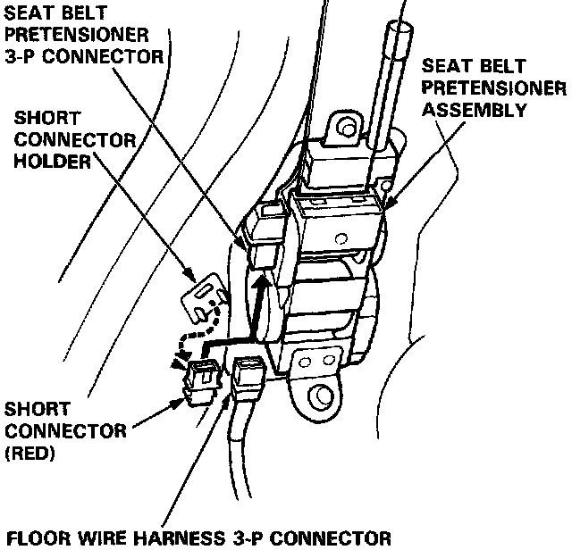

Air Bag Systems: Service and Repair
SHORT CONNECTOR INSTALLATIONInstall short connectors as follows whenever you are working near SRS wiring or components.
CAUTION: Before disconnecting the airbag connector, be sure to completely discharge the capacitor in the back-up circuit (by turning off the ignition switch and allowing three minutes to elapse) to prevent a malfunction of the seat belt pretensioners.
1. Disconnect the battery negative cable, then disconnect the positive cable.
2. Remove the access panel from the steering wheel, then remove the short connector (RED) from the panel.

3. Disconnect the connector between the airbag and the cable reel,then install the short connector (RED) on the airbag side of the connector.
4. Install SRS short connector A (O7MAZ-SPOO2OA) to the cable reel side of the 3-P connector.

5. Remove the glove box, then disconnect the connector between the passenger's airbag and SRS main harness.
6. Install the short connector (RED) to the airbag side of the connector.

7. Install SRS short connector A (O7MAZ-SPOO2OA) to the SRS main harness side of the 3-P connector.

8. Remove the right rear side trim panel.
9. Remove the short connector (RED) from the short connector holder.

10. Disconnect the seat belt pretensioner 3-P connector, then install the short connector (RED) to the pretensioner side of the connector.
11. Repeat steps 8, 9, and 10 on the left side.
12. After completing repair work, be sure to remove the short connectors and reconnect all SRS connectors.